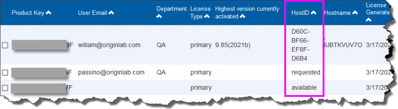

マルチユーザ ノードロックライセンス
マルチユーザ ノードロックライセンス
次のシリアル番号は、マルチシートライセンスです：
xFxxx-9xxx-76xxxxx, または
xFxxx-6xxx-76xxxxx.
シリアル番号が、
xxxxx-2xxx-79xxxxx, または、
xxxxx-3xxx-79xxxxx
ネットワーク同時起動版ですので、このページの情報は関係ありません。
マルチシート版は、契約ライセンス数に基づいて、その数のOriginをインストール、または、設置できます。それぞれのコンピュータは、OriginLabからライセンス認証する必要があり、ライセンスはコンピュータ指定になります。Originのライセンスのあるコンピュータを交換したい場合は、新しいコンピュータにライセンスを移行する前に、「ライセンスの取り外し」をする必要があります。
NOTE: この説明はOrigin 2017以降のバージョンに対するものです。バージョン2016以降をご利用されている場合は、こちらのページ をご覧ください。
Originをユーザに展開する前に.
マルチユーザのパッケージには、ライセンスを取得できるWEBメンバーシップアカウントを制限できる仕組みがあります。この仕組みは、シリアル番号の不正利用を防ぎ、あなたの所属する会社や研究室のユーザがライセンスを取得できるように確保することを目的としています。
OriginLabのWEBサイトでプロダクトキーに有効なメカニズムを構築するには
Originの管理者として、シリアル番号、生成されたプロダクトキー、ユーザへのプロダクトキーの提供の仕方を次のステップで登録を完了してください。この処理は、Originが使えるようになったとユーザに周知する前に完了してください。
- ご購入後にメールが届きます。このメールには、Originのシリアル番号と登録用のリンクが含まれています。
販売代理店がある地域では、登録コードを販売代理店から受け取ることになります。
- 登録用のリンクをクリックして、OriginのWebサイトに移動します。ログインまたは新規登録を求められます。既にWebメンバーシップを持っている場合はログインします。必要な場合はアカウントを作成してください。
登録コードを受け取ったら、OriginLabのWebサイト(https://www.originlab.com/reg)にログインします。ようこそのページにある「Origin製品の登録(v9.4.2017)」をクリックし、ステップ3に進みます。
- ログイン後、あなたのシリアル番号と登録コード、プロダクトキーの提供方法の3つのオプションが情報がWebページに表示されます。次のオプションから選択しますが、一度ライセンシングのプロセスを開始してしまうと、オプションを変更することが出来ませんので、充分に検討してから決定してください。:
- 管理者で全てのライセンスプロダクトキーを入手します。
このオプションを選択すると、Originのライセンス取得について、管理者ご自身で管理して頂きます。管理者ご自身で個々のワークステーションにOriginをインストールしてライセンス取得を行うか、ユーザにプロダクトキーを渡してライセンス取得を実施して頂く形となります。.
次のように行います：
- あなたのアカウントでOriginLabのWebサイトにログインします。
- 「登録済のOrigin製品を表示する」 リンクをクリックします。
- 対象のシリアル番号を捜し、そのリンクをクリックします。全てのプロダクトキーがリストアップされます。
- ワークステーションのOriginを起動し、利用できるプロダクトキーを選択して、ライセンスのアクティブ化を完了します。
- ユーザのライセンスプロダクトキーのリクエストを管理者で許可します
このオプションでは、ユーザがプロダクトキーをリクエストできるURLを与えます。ユーザにURLを送る前に、管理者はユーザのＥmailフラグメントを追加する必要があります。
次に：
- ユーザにURLをメールします。
- URLを使ってユーザはプロダクトキーをリクエストすると、あなたはメールを受けとります。
- "Handle Product Keys request」 ページに移動し、選択したユーザの表にプロダクトキーを割り当てます。これにより、ユーザのアカウントにプロダクトキーを含んだメールが送られます。
- ユーザはOriginをインストールして実行し、プロダクトキーを使ってライセンスを有効にします。
- 個々のユーザがライセンスプロダクトキーを取得する
このオプションを選択すると、ユーザに配布するURLが管理者に与えられます。ユーザにURLを送る前に、管理者はユーザのＥmailフラグメントを追加する必要があります。
次に：
- ユーザにURLをメールします。
- ユーザがURLをクリックすると、プロダクトキーが生成され、ユーザにメールされます。
- ユーザはOriginをインストールして実行し、プロダクトキーを使ってライセンスを有効にします。
- 必要に応じて、Email フラグメンツを入力してください。
- もし管理者で全てのライセンスプロダクトキーを入手します。を前のステップで選択した場合、Emailフラグメントを設定する必要はありません。
- ユーザがライセンスプロダクトキーをリクエストすることを許可する を選択した場合
- 許可したユーザもライセンスを取得できるようにしたい場合、
まずは自分のアカウントのメールアドレスを入力します。終わったら、「許可した」ユーザのメールアドレスを全て入力します。（以下のステップを参照してください。）ユーザがライセンス取得をしようとする前であれば、管理者はいつでもOriginLabのWEBサイトに戻ってメールアドレスの追加ができます。
- 組織内のメンバーでライセンス取得を制限したい場合には、あなたの組織特有のEmailフラグメントを入力しておき、ライセンスを取得するべき対象者のみがライセンスを取得できるようにします。
- 個々のユーザがライセンスプロダクトキーを入手するを選択した場合は、管理者の全emailアドレスと追加する全てのemailアドレスを入力出来、また、組織特有のemailフラグメントも入力することが出来ます。詳しくは上記の記述をご参照下さい。
/Tip_icon.png) | 一つ目のメールアドレスの入力が終わった後、追加のメールアドレスを入力する際は、
- OriginLabのWebサイトの右上にある、あなたのログイン名をクリックします。（Webサイトに戻って、まだログインしていない場合には、ログインをクリックします）
- 続いて、「Welcome」ページで「ライセンスアクセス制限」をクリックします。
- 開いたページの案内に沿って、メールアドレスまたはアドレスの一部を追加します。
|
- 登録 ボタンをクリックして登録を完了します。
| - 非常に大きなグループの管理者に対して、エンドユーザにキーを簡単に渡せるように固有のグループプロダクトキーを提供しています。このグループキーでOriginのバッチインストールを行うこともできます。
- HostID列からプロダクトキーのステータスを確認できます。
- 「Requested」とは、エンドユーザがこのプロダクトキーを要求し、自分のアカウントでこのキーを取得したが、まだアクティブ化していないことを意味します。あなたがそれを変更しない限り、他の人はそれを要求することはできません。
- 「Available」とは、エンドユーザがこのプロダクトキーをまだ要求していないことを意味します。他の人が要求することができる状態です。
- 「HostID」は、このプロダクトキーが要求されてアクティブ化されたことを意味します。

|
Originパッケージをユーザに配布するには
Originをユーザに配布する時、インストーラーとシリアル番号と共にプロダクトキーURLを提供してください。このコードはライセンス取得時に使用されます。また、ライセンス認証をする時はOriginLabのWEBサイトにログインする必要があることをユーザに説明し、アカウントを持っていないようなら作成するように伝えてください。OriginLabのWebサイトに参加する場合には、メールアドレスを含んだ組織のコンタクト情報を入力するようにユーザに伝えます。
すでにアカウントを持っているが、（Gmail等を使っており）所属している組織が発行したメールアドレスを登録していない場合、まずアカウントをアップデートし、所属組織の情報に変更するよう説明してください。WEBサイトにログイン後、ユーザプロファイルの表示/更新リンクをクリックしてアカウントのアップデートを行う必要があります。
ライセンスのアクティブ化
重要事項
- Origin 2017から、新しいライセンスシステムになります。ノードロックライセンスのプロセスを完了するのに、管理者の権限は必要ありません。
- 一度処理が終わるとライセンスはコンピュータに保存されるので、それ以降はインターネット接続は必要ありません。
|
エンドユーザでのライセンスのアクティブ化
- Originの管理者から、シリアル番号と関連するプロダクトキーを受けとります。
- Originを起動します。ライセンスのアクティベーションダイアログが開きます。
- 以下にプロダクトキーを入力してアクティブ化をクリックしてください のオプションを選択し、プロダクトキーを入力し、アクティブ化をクリックします。
- バックグラウンドでライセンスプロセスが行われます。ライセンシングが成功すると、成功のメッセージが表示されます。
ライセンスのプロセスが失敗した場合は、次のステップに進んで下さい：
- 様々な理由によりライセンスプロセスが失敗した場合は（たとえば、インターネット接続がない、originlab.com サイトがファイアウォールでブロックされた場合など）、ノートパッドを開き、そのリンクを確認します。
- リンクをコピーしてインターネットが接続されているブラウザソフトに貼り付けます。OriginLabのWebサイトが開きます。
- ライセンスファイルテキストが作成され、WEBページ上に表示されます。
- ライセンスファイルテキストをコピーして、ライセンスのアクティブ化 ダイアログに戻り、貼り付けます。OKをクリックします。
管理者が他のユーザ用にライセンスを取得する
マルチシートノードロックパッケージの管理者の場合は、ユーザ自身でOriginライセンスの取得を取得できます。または、ライセンス取得のプロセスを管理者で行うことが出来ます。シリアル番号に対するプロダクトキーの提供機構を構築するには、全てのライセンスプロダクトキーを自分で取得する ユーザのコンピュータでライセンスをアクティベートするために次の手順に従ってください。
関連項目
よくある質問
ライセンスの取り外し
Originのライセンスを別のコンピュータに移したい場合、元のコンピュータからライセンスを取り外して新しいコンピュータに、同じプロダクトキーでライセンスを入れる必要があります。
Originをコンピュータで、まだ実行できる場合：
- Originを起動します。ヘルプ：ライセンスの取り外し から、ライセンスの取り外し ダイアログを開きます。
- ライセンスの取り外し ボタンをクリックします。
- ライセンスのプロセスはバックグラウンドで行われます。成功すると、成功のメッセージが表示されます。
ライセンスのプロセスが失敗した場合は、次のステップに進んで下さい：
- 様々な理由によりライセンスプロセスが失敗した場合は（たとえば、インターネット接続がない、originlab.com サイトがファイアウォールでブロックされた場合など）、ノートパッドを開き、そのリンクを確認します。
- リンクをコピーしてインターネットが接続されているブラウザソフトに貼り付けます。
- ライセンス情報がページに表示されます。除去コード を確認します。
- Originに戻ります。ライセンスの取り外し ダイアログの下側にある、除去コードの編集ボックスに、除去コード を入力します。ライセンスの取り外し ボタンをクリックします。
- ノートパッドにリンクを記入します。リンクをコピーしてインターネットが接続されているブラウザソフトに貼り付けます。
- 続けるボタンをクリックします。完了のメッセージが出たら、ライセンスが再利用のために発行されます。
Originをコンピュータで実行できない場合：
あなたが管理者の場合
次の手順に従い、OriginLabのWebサイトでライセンスの取り外しを実行します。
- OriginLabのウェブサイト(www.OriginLab.com).を開きます。ログインします。
- ようこそページの ”登録済みのOrigin製品を表示”
をクリックします。
- 登録済みのOrigin製品を表示ページで、対象のシリアル番号のリンクをクリックします。
- 開いたページで、”全てのプロダクトキーをここで見ることができます。”をクリックします。
- Origin製品の登録｜ライセンス要求履歴のページで、”go”リンクをクリックします。
- デバイスからライセンスを取り外すのページで、PC情報を確認し続けるをクリックします。もしライセンスの取り外しが成功した場合は、成功したことを示すメッセージが表示され、そのプロダクトキーを再利用できます。
- もしライセンスの取り外しが失敗した場合は、システムの移行リクエストフォームページに自動的に移動します。リクエストのフォームを入力して送信してください。
あなたがユーザの場合
OriginLabのWebサイトでのライセンス取り外しについては、管理者に問い合わせてください。
よくある質問
メンテナンスを更新した後、マルチシートライセンスをアップデートするには
Origin2018から、新しいバージョンはプロダクトキーや使用環境などに合わせた古いバージョンから全てのライセンスを引継ぐといったように、同じライセンスを別々のバージョンでシェアします。より簡単に更新を行うには
あなたが管理者の場合
メンテナンスの更新を進めた後は、シリアル番号は最新のバージョンに自動的に更新されます。以前のバージョンの設定に関連した全てのライセンス（プロダクトキーの分配やEmailフラグメントを含む）は新しいバージョンに適用されます。ご準備ができましたらユーザに更新を知らせてください。以下はいくつかのヒントです。
- OriginLabのウェブサイト(www.OriginLab.com).を開きます。ログインします。
- ようこそページの ”登録済みのOrigin製品を表示”
をクリックします。
- 登録済みのOrigin製品を表示のページでシリアル番号の表にあるバージョン列をチェックして、更新が可能な新バージョンがあるかを確認します。
- 更新が可能なバージョンがある場合、新しいバージョンをインストールして同じプロダクトキーでアクティブ化が出来る事をユーザにお知らせください。詳細の手順は、あなたが管理者の場合 > 更新可能なバージョンがある場合 セクションを参照してください。
- 新しいバージョンが表示されない場合、現バージョンの新規ライセンスを取得して、メンテナンス期限を更新するようにユーザにはお知らせください。詳細の手順は、あなたが管理者の場合 > 更新可能なバージョンがない場合 セクションを参照してください。
- プロダクトキーのグループをリセットしたい場合は、このセクションを参照願います。
あなたがユーザの場合
- 管理者から更新の情報を受けとります。
- アップグレードできる新しいバージョンがある場合には、
- 現在Originがライセンスされているコンピュータに新しいバージョンをインストールする場合
- Originを起動します。ライセンスプロセスは自動的にバックグラウンドで行われます。成功すると、成功のメッセージが表示されます。もし失敗した場合は、対応説明が記述されたメモ帳が開きます。説明に従ってOriginをマニュアルでアクティブ化してください。
新しいバージョンが表示されない場合は、
- Originを起動します。メニューからヘルプ：ライセンスのアクティブ化を選択します。
- ライセンスのアクティベーション ダイアログにプロダクトキーが既に自動入力されています。アクティブ化 ボタンをクリックします。成功すると、成功のメッセージが表示されます。もし失敗した場合は、対応説明が記述されたメモ帳が開きます。説明に従ってOriginをマニュアルでアクティブ化してください。
- ヘルプ：バージョン情報を選択し、メンテナンス期間がアップデートされたことを確認してください。
プロダクトキーのグループをリセットしたい場合
- OriginLabのウェブサイト(www.OriginLab.com).を開きます。ログインします。
- ようこそページの ”登録済みのOrigin製品を表示”
をクリックします。
- 登録済みのOrigin製品を表示ページで、対象のシリアル番号のリンクをクリックします。
- 開いたページで、”全てのプロダクトキーをここで見ることができます。”をクリックします。
- Origin製品の登録 | ライセンス要求履歴のページで、使用されていないプロダクトキーにチェックを入れます。
- 選択したプロダクトキーのリセットをOriginLabにリクエストボタンをクリックします。
- 編集ボックスのコメント欄にリセットの理由を記入します。OKをクリックします。
- リクエストが進むと、プロダクトキーがリセットされた旨のEメールが届きます。新しいキーをOriginLabのサイトで確認出来ます。